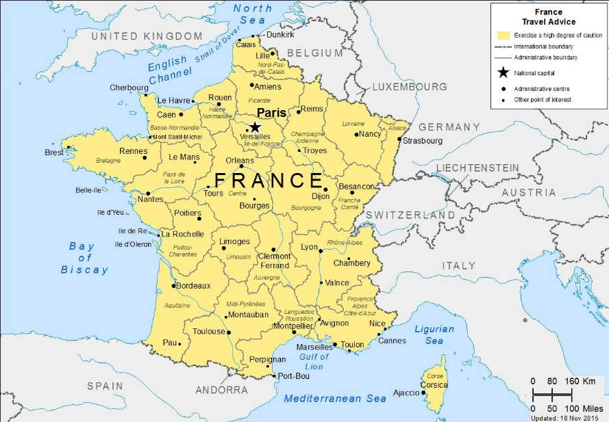
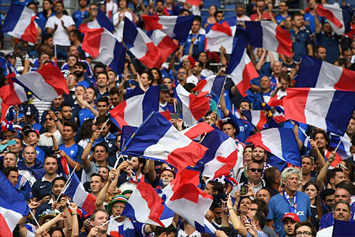
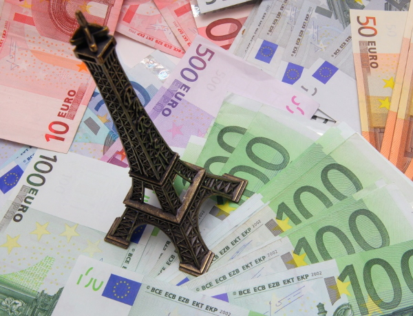
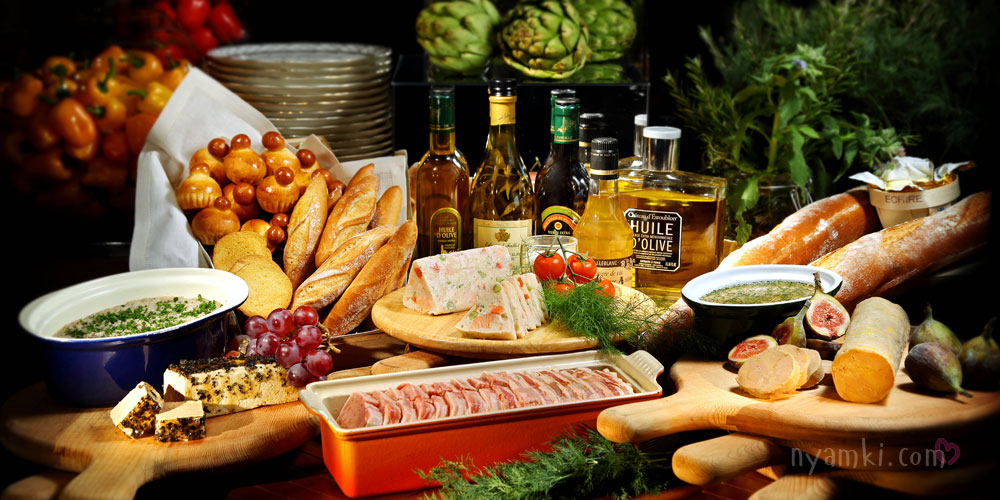
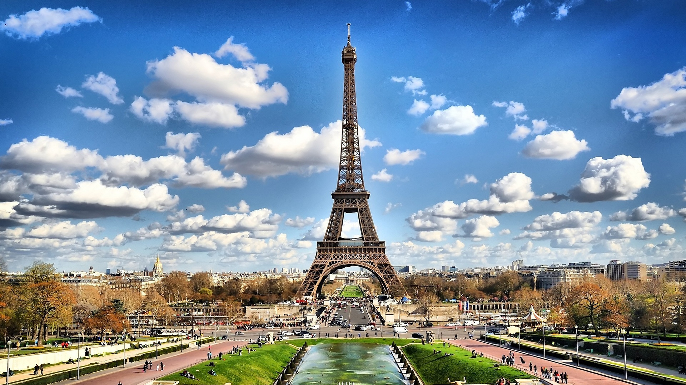

Франция
География
 Франция – государство в Западной Европе. На севере страна граничит с Бельгией и Люксембургом, северо-востоке с Германией, на востоке с Швейцарией и Италией и на юге с Испанией и Андоррой. Площадь Франции составляет более 550 тысяч квадратных километров. Около двух третей территории страны занимают плоские или всхолмленные равнины и небольшие возвышенности. Основные горные хребты и массивы Франции – Альпы, Арденны, Пиренеи, Вогезы, Юра и Центральный массив.
Во Французских Альпах находится высочайшая горная вершина Европы – гора Монблан (4807 м). Альпийские и Пиренейские горы расположены на границе с Италией, Испанией и Швейцарией, пролив Ла-Манш отделяет Францию от Англии.
На материке Франция граничит с Бельгией, Люксембургом и Германией, на море границы образуют пролив Ла-Манш, побережье Атлантического океана, Северного, Средиземного морей.
Речная сеть Франции довольно густая: крупные реки – Луара, Гаронна, Сена, Рейн и Рона судоходны и соединены многочисленными каналами.
Население

Население Франции по оценке на 1 января 2017 года составляло 64 859 773 человека в метрополии и 66 991 000 человек — с учётом заморских территорий. По численности населения в 2014 году Франция занимала 21-е место в мире. По оценкам на 2011 год 30 % населения Франции моложе 60 лет являлись иммигрантами в третьем поколении. По состоянию на 2018 год в общей сложности иммигранты и их прямые потомки составляли 14 миллионов человек (20,9 % населения Франции). По состоянию на 2019 год во Франции проживало 6,7 миллиона иммигрантов, составивших 9,9 % населения страны.
Плотность населения во Франции — 103 человека на 1 км².
На начало 2011 года во Франции насчитывалось 5,5 миллиона иммигрантов, то есть, согласно определению INSEE, проживающих во Франции иностранцев, родившихся за пределами Франции, 3,8 миллиона иностранцев, 2,8 миллиона бывших иностранцев, получивших французское гражданство.
Согласно результатам опроса 2004 года, 64,3 % населения страны считает себя католиками, 27 % не причисляют себя ни к какой религии, 4,3 % считает себя мусульманами, 1,9 % — протестантами, 1 % — армянская апостольская церковь, 0,6 % — иудеями. Согласно оценкам МИД Франции, в стране порядка 5 миллионов мусульман.
Экономика
 Франция — высокоразвитая страна, ядерная и космическая держава. По общему объёму экономики страна занимает второе место в Европейском союзе после Германии и стабильно входит в первую мировую десятку (в 2019 году Франция признана 6-й экономически развитой державой мира после США, Китая, Японии, Германии и Индии).
Тем не менее, после вступления в Еврозону, базовые экономические показатели страны демонстрируют тенденцию к ухудшению. Её вклад в экономику Еврозоны уменьшился с 17,0 % в 2000 году до 13,4 % в 2019 из-за неспособности конкурировать с более организованной экономикой Германии в рамках единого валютного союза. Серьёзной проблемой Франции является также и продолжающийся интенсивный рост населения, который в несколько раз превышает темпы ростa ВВП страны в 2000-е годы.В экономике преобладает сфера услуг, в которой занято 76,7 % экономически активного населения, на вторичный сектор приходится 20,5 %. Поскольку торговый баланс страны стабильно отрицателен с 2001 года, единственным фактором современного роста французской экономики в условиях дорогой валюты (евро) остается стимулирование потребительского спроса дешевыми кредитами, из-за чего внешний долг страны практически достиг 100 % ВВП.
Традиционная особенность французской экономической политики, которая часто называется и её слабостью — большая (до 57 % в 2016 году) доля государственного сектора.
Французская Кухня
 Французская кухня (фр. Cuisine française) — традиционная кухня Франции, условно разделена на две основные ветви — региональную народную и изысканную аристократическую. К региональной кухне относятся блюда, которые на протяжении веков готовили жители различных исторических областей страны. Аристократическая французская кухня сформировалась при дворе Бурбонов, когда Париж стал законодателем мировой моды. Её неповторимые блюда отличались разнообразием и изысканностью.
«Гастрономическая трапеза французов» по предложению Европейского института пищевой истории и культуры была добавлена в репрезентативный список нематериального культурного наследия человечества ЮНЕСКО 16 ноября 2010 года.
Блюда французской кухни едят в ресторанах, бистро, брассери и кафе. Традиционная французская трапеза может начинаться с закусок (hors d’oeuvre) (горячих или холодных закусок, если речь идёт о ланче), за которыми следует суп, затем основное блюдо, салат и сыр. Завершением трапезы служит десерт или фрукты. Важной частью трапезы является сыр, которого более 200 сортов. Именно во Франции сформировалось такое блюдо как суп с прозрачным бульоном. Особой гордостью французов являются вина. Короли французских вин — бордо и бургундское. Также всемирной известностью пользуется коньяк.
За французами закрепилось обидное прозвище «лягушатники»[2] благодаря употреблению ими в пищу лягушачьих лапок, однако это блюдо является скорее деликатесом, а не ежедневной едой, и подаётся не во всех ресторанах. Франция является крупнейшим импортером лягушек из азиатских стран для их употребления в пищу.
Эйфелева Башня
Эйфелева башня — металлическая башня в центре Парижа, самая узнаваемая его архитектурная достопримечательность. Названа в честь главного конструктора Гюстава Эйфеля; сам Эйфель называл её просто «300-метровой башней» (tour de 300 mètres).
Башня, впоследствии ставшая символом Парижа, была построена в 1889 году и первоначально задумывалась как временное сооружение, служившее входной аркой парижской Всемирной выставки 1889 года.
Эйфелеву башню называют самой посещаемой платной и самой фотографируемой достопримечательностью мира.
